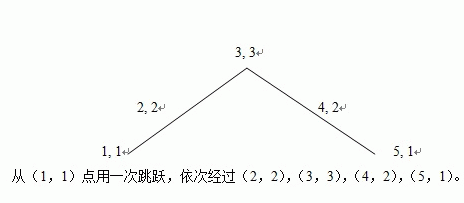
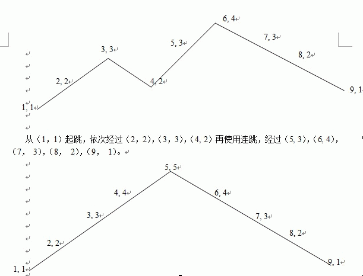

在游戏天天酷跑中，最爽的应该是超级奖励模式了吧，没有一切障碍，可以尽情的吃金币，现在请你控制游戏角色来获得尽可能多的分数。
游戏界面离散为一个长度为1~n，高度为1~m（初始点为（0，1））的矩阵图。每个格子上都有收益（-1~1000），-1表示该点不能通过。游戏角色从起点一路奔跑向终点，中途可以跳跃来获得更高的分数，在空中还能进行连跳。游戏开始前你可以设定跳跃的高度，以及能连跳的次数，初始跳跃高度为1，连跳数为1（最多为5），升级跳跃高度和连跳都需要一定的花费。跳跃高度设定完后游戏角色每次跳跃高度都将固定，连跳必须在下落过程中可以使用。所有操作都将在整点上完成，需要保证设定完的跳跃高度及连跳数，无法跳出游戏高度上限。

以下是连跳数为2连跳，跳跃高度为2的跳跃方案：
